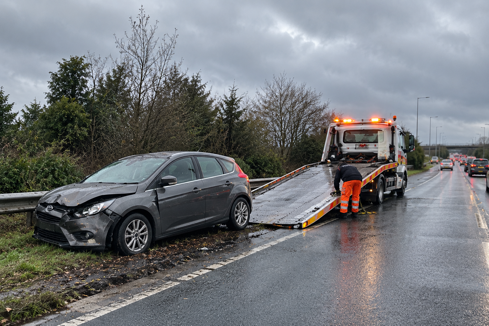
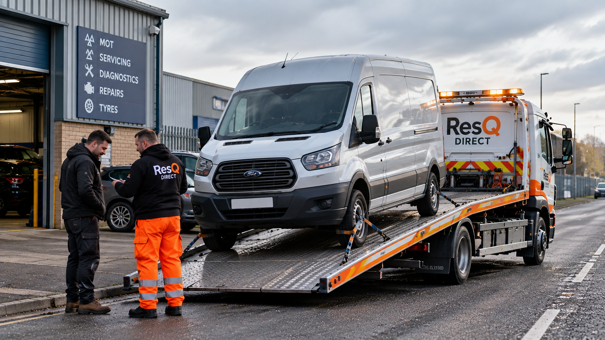
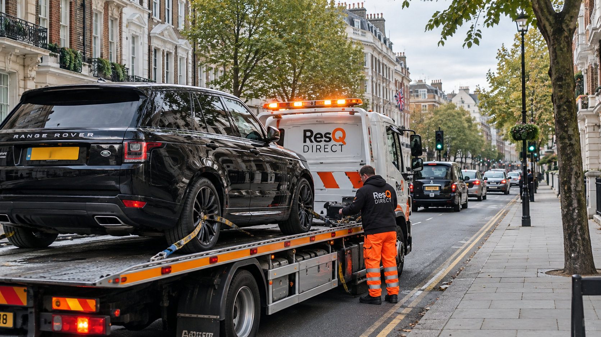
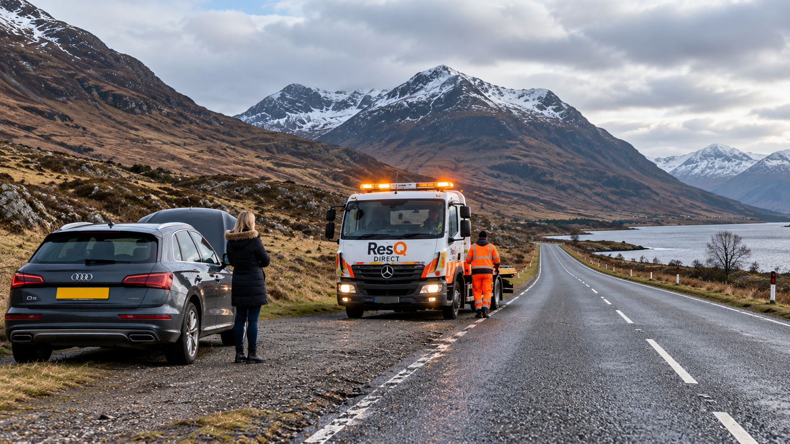
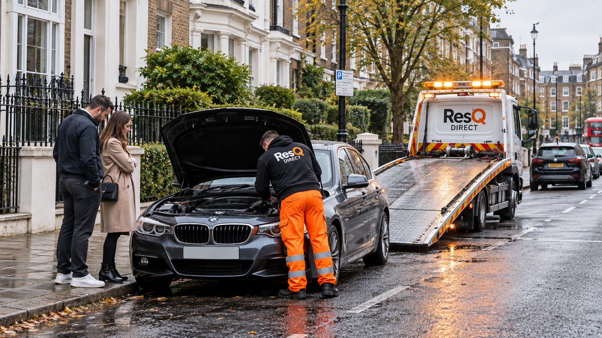
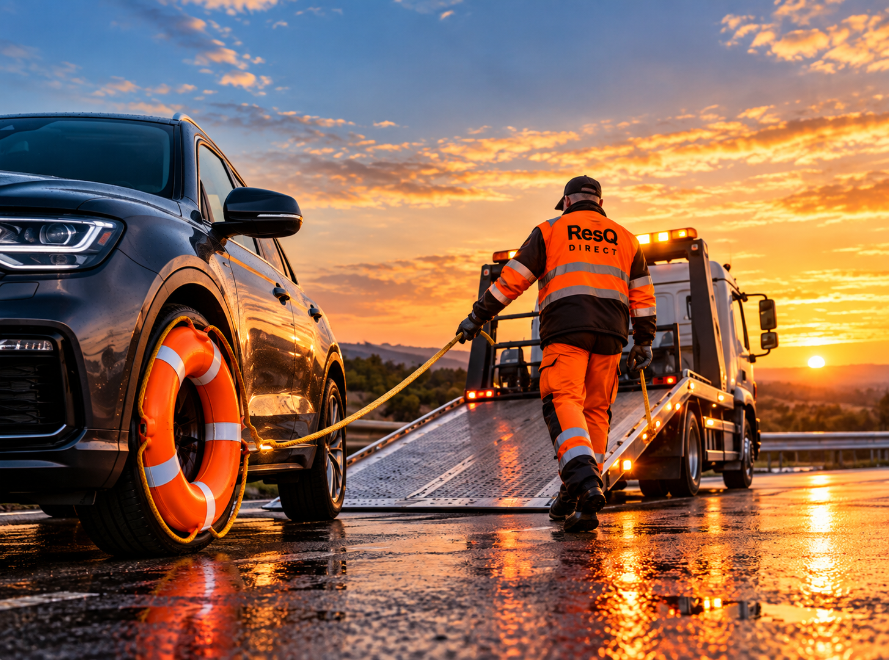

Accident Recovery
If a vehicle cannot safely be driven following an accident, we can arrange recovery and transport to your chosen garage, repair centre, home address or another agreed destination.
Accident recovery →RECOVERY • TRANSPORT • NATIONWIDE
Peterborough • Cambridgeshire • Nationwide
Call us: 07710 482304
VEHICLE RECOVERY
Based in Peterborough, ResQ Direct provides vehicle recovery for cars and vans across Peterborough, Cambridgeshire and surrounding areas, together with longer-distance vehicle transport across Great Britain.
If your car or van has broken down, been involved in an accident or cannot be driven safely, ResQ Direct can recover the vehicle and transport it to the destination you choose.
This could be your home, a local garage, repair centre, dealership or another agreed location. We can also help with non-running vehicles that need to be moved rather than repaired at the roadside.
When you contact us, tell us where the vehicle is, what vehicle you have and what has happened. If you already know where you would like it taken, give us the destination as well. This helps us understand the recovery required and discuss the job with you.

We can recover cars, vans and motorcycles that have broken down, been damaged or cannot be driven safely. Non-running vehicles can also be collected, including those that need transport to a garage, repair centre or another suitable destination.
When you contact us, provide the vehicle make and model, its current location and the destination. If it is damaged or non-running, tell us whether it starts, rolls and steers, and mention any access or loading issues we should know about.
Your vehicle can be taken to your home, a garage, repair centre, dealership or another agreed destination. You choose where it needs to go, and we arrange the recovery around the vehicle, collection point and destination.
VEHICLE TRANSPORT
ResQ Direct provides vehicle collection and transport for private customers, garages, dealers and other automotive businesses. We can help with local vehicle movements as well as longer-distance collections and deliveries across Great Britain.
Whether you have bought a vehicle privately or at auction, need a non-running vehicle moved to a garage, or simply need a car transported from one location to another, tell us where the vehicle is and where it needs to go.
For a transport quote, send us the collection and delivery postcodes, the make and model of the vehicle and let us know whether it starts, drives, rolls and steers. Please also tell us about anything that may affect loading or access at either location.
GET A TRANSPORT QUOTE
Bought or sold a vehicle privately? We can arrange transport between the seller, buyer, home address, garage or another agreed location, making longer-distance purchases and sales easier to manage.
Purchased a vehicle at auction? Provide the auction location, destination and vehicle details, including whether it is running. We can then arrange collection in line with the available access and collection requirements.
Vehicles that cannot be driven can still be transported. Tell us whether the vehicle starts, rolls and steers, together with any known damage, locked wheels or access issues that may affect loading.
We support garages, dealerships and other automotive businesses with planned vehicle transport, including customer vehicles, workshop transfers, vehicle purchases and transport between business locations.
Motorcycles can be transported when riding them is not practical, including non-running bikes, private purchases and planned transfers. Send us the motorcycle details and journey information when requesting a quote.
For journeys beyond the local area, we provide planned vehicle transport across England, Scotland and Wales. Send us both postcodes and the vehicle details so we can assess the journey before arranging transport.
WHY RESQ DIRECT
We can help with:
Every recovery or transport job has different requirements. Vehicle condition, access, loading and journey distance can all affect the most suitable way to move a vehicle.
We take those details into account before collection, whether the job involves a local recovery or a planned long-distance vehicle movement.
The aim is simple: clear arrangements, careful vehicle handling and a straightforward collection and delivery process.

Speak directly with ResQ Direct about your recovery or transport. Send us your vehicle make and model, current location and destination, together with information about its condition or access.
We help with broken-down, accident-damaged and non-running vehicles, as well as planned collection and delivery to homes, garages, repair centres, dealerships and other agreed destinations.
Recovery is centred around Peterborough, Cambridgeshire and surrounding areas. Planned vehicle transport can also be arranged for longer-distance collections and deliveries across England, Scotland and Wales.
AREAS WE COVER

ResQ Direct provides vehicle recovery in Peterborough, Cambridgeshire and surrounding areas for vehicles that have broken down, been damaged or cannot be driven safely.
For planned vehicle transport, longer-distance collections and deliveries can be arranged across England, Scotland and Wales, including private purchases, auction vehicles and transport to garages or dealerships.
Tell us where your vehicle needs to go →
VEHICLE RECOVERY
A breakdown can happen at home, at work or while you're already on the road. ResQ Direct can recover vehicles that cannot safely continue their journey and transport them to a garage, home address or another suitable destination.
Based around Peterborough, we provide recovery for cars, vans and motorcycles, with longer-distance vehicle transport available across Great Britain.
Need vehicle recovery? Get in touch →SEE SOME OF OUR WORK
A small selection of vehicle recovery, collection and transport work completed by ResQ Direct.
From individual vehicle movements to jobs requiring both our recovery truck and trailer, every collection is considered around the vehicle, access and journey involved.
VIEW ALL OUR WORK →


HOW IT WORKS
Giving us the right information at the beginning helps us understand the vehicle, journey and collection requirements before the job is arranged.
Send us the make and model and explain whether the vehicle starts, drives, rolls and steers. Tell us about any damage or other issue that may affect loading.
Give us the collection and destination postcodes. If access is restricted at either location, let us know when you contact us.
We use the information you provide to understand the recovery or transport required and discuss the collection with you.
The vehicle is collected and transported to the agreed destination, whether that is a home, garage, dealership, repair centre or another suitable location.
GETTING A QUOTE
Every recovery or transport job is different, so the cost depends on the journey and the vehicle rather than one fixed price for every collection.
The collection and delivery locations are important, but the condition and size of the vehicle can also affect the job. A vehicle that starts, rolls and steers may have different loading requirements from an accident-damaged vehicle or one with locked wheels.
Access can matter too. Narrow roads, restricted parking, underground locations or difficult collection points may need to be considered before the vehicle is collected.
Collection and delivery locations and overall distance.
Vehicle type, make, model and approximate size.
Whether it starts, drives, rolls and steers.
Anything at either location that could affect loading.
IF YOU HAVE BROKEN DOWN
If you are currently broken down, concentrate first on keeping yourself and other road users safe. Your next action will depend on where the vehicle has stopped and whether you can reach a safer location.
Once you are in a safe position, you can contact us to discuss recovery. Tell us where the vehicle is, what has happened and anything that may affect its recovery. If the vehicle is in a dangerous position or there is an immediate risk to people or traffic, contact the appropriate emergency service first.
Never put yourself at risk to inspect, repair or move a vehicle in an unsafe location.
USEFUL INFORMATION
Practical information about vehicle recovery, transport and what to consider when a vehicle needs to be moved.
BREAKDOWN GUIDE
A practical guide to staying safe, deciding what information to provide and arranging recovery when your vehicle cannot continue its journey.
READ GUIDE →
VEHICLE TRANSPORT
What information is useful when arranging transport for a vehicle that does not start, drive or move normally.
READ GUIDE →BUYING & COLLECTION
The details to have ready when arranging collection after a private purchase, auction purchase or long-distance sale.
READ GUIDE →FREQUENTLY ASKED QUESTIONS
Your vehicle can be transported to your home, a garage, repair centre, dealership or another agreed destination.
Yes. When requesting a quote, tell us whether the vehicle starts, rolls and steers and mention any known damage or locked wheels.
Auction vehicle collection is one of the planned transport services we can discuss. Send us the auction location, destination and vehicle details.
Yes. Planned vehicle transport can be arranged for longer-distance journeys across England, Scotland and Wales.
Send the collection and delivery postcodes, vehicle make and model, its running condition and anything that could affect loading or access.
Yes. Contact us with the motorcycle details, collection and destination locations and whether the motorcycle is running.
ABOUT RESQ DIRECT
ResQ Direct is an independent vehicle recovery and transport service based in the Peterborough area.
We help private customers, garages, dealers and other businesses move vehicles safely from one location to another. This can include breakdown recovery, non-running vehicles, private purchases, auction collections and longer-distance vehicle transport.
Every job is different. Vehicle condition, access at the collection point, loading requirements and journey distance can all affect the most suitable way to move a vehicle. That is why we ask for the important details before confirming a job.

CONTACT / GET A QUOTE
Need vehicle recovery or want a transport quote? Send us the vehicle details, collection location and destination and tell us whether the vehicle is running.
Peterborough, Cambridgeshire & surrounding areas
England, Scotland & Wales
